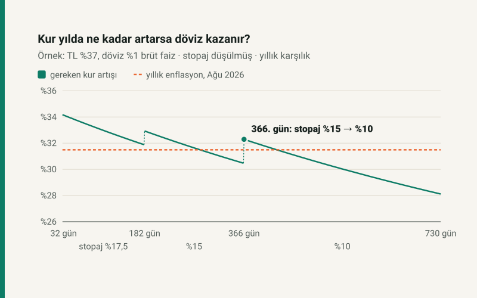

Kısa cevap
Hangisinin kazanacağını kur belirler, ama eşiği faiz ve vade belirler. Başabaş kur, iki yolu vade sonunda eşitleyen kurdur: kur onun üstünde biterse döviz, altında biterse TL kazanır. Bu yazıdaki oranlar örnektir (TL %37, döviz %1); kendi bankanızın oranıyla başabaş kur hesaplama aracında deneyin.
Hesap üç şey gösteriyor: vade 1 yılı bir gün aştığında eşik 1,9 puan yükseliyor, döviz stopajının %25 olması eşiği neredeyse hiç değiştirmiyor, bankanın kur makası ise stopaj farkından yüz kat ağır basıyor.
Bir örnekle başabaş kur
100.000 TL'niz var ve 32 günlük vade düşünüyorsunuz. Dolar 48,85 TL.
- TL yolu: %37 brüt faiz 32 günde 3.243,84 TL brüt faiz getirir; %17,5 stopaj 567,67 TL'dir. Net faiz 2.676,16 TL, vade sonunda 102.676,16 TL.
- Döviz yolu: para bugün 2.047,08 dolar eder. %1 brüt faiz ve %25 stopajdan sonra vade sonunda 2.048,43 dolar.
İkisini eşitleyen kur 102.676,16 ÷ 2.048,43, yani başabaş kur 50,1243 TL. Dolar 32 gün sonra bunun üstündeyse döviz, altındaysa TL daha çok para bırakır. Başabaşın bugünkü kura oranı, anaparadan ve kurun düzeyinden bağımsızdır: hangi tutarla hesaplarsanız hesaplayın, kurun aynı yüzdeyle artması gerekir.
Eşiği asıl TL faizi belirliyor
Aşağıdaki tablo, döviz faizi %1'de sabitken TL faizine ve vadeye göre gereken kur artışının yıllık karşılığını veriyor. Kısa vadeler için yıllık karşılık, aynı getiriyle vadenin bir yıl boyunca yenilendiği varsayımıyla bileşik hesaplandı.
| TL faizi (brüt) | 32 gün | 92 gün | 182 gün | 366 gün |
|---|---|---|---|---|
| %25 | %21,76 | %21,36 | %21,47 | %21,58 |
| %30 | %26,79 | %26,19 | %26,18 | %26,05 |
| %37 | %34,14 | %33,19 | %32,93 | %32,29 |
| %45 | %43,02 | %41,54 | %40,86 | %39,43 |
Kabaca kural şu: kurun yılda, TL mevduatın net faizi kadar artması gerekir. Döviz faizi bu eşiği yalnızca kendisi kadar düşürür; %2 döviz faizinde %33,14'e, %3 döviz faizinde %32,15'e iner.
Bir gün vade farkı: 1,9 puan
TL mevduatta stopaj vadeye göre kademeli: 6 aya kadar %17,5, 1 yıla kadar %15, 1 yıldan uzun vadede %10. Döviz mevduatında her vadede %25. Bu yüzden eşik vadeyle düzgün değişmiyor, kademe sınırlarında sıçrıyor:
| Vade | TL stopajı | Vade boyunca | Yıllık karşılık |
|---|---|---|---|
| 32 gün | %17,5 | %2,61 | %34,14 |
| 92 gün | %17,5 | %7,49 | %33,19 |
| 181 gün | %17,5 | %14,71 | %31,88 |
| 182 gün | %15 | %15,25 | %32,93 |
| 365 gün | %15 | %30,47 | %30,47 |
| 366 gün | %10 | %32,40 | %32,29 |
| 730 gün | %10 | %64,14 | %28,12 |
365 günlük vadede kurun %30,47'den fazla artması yetiyor; vade bir gün uzayıp 366 gün olunca eşik %30,47'den %32,40'a çıkıyor. Tek günlük faiz bunun küçük bir kısmı; farkın çoğu TL stopajının %15'ten %10'a inmesinden geliyor. Aynı sıçrama daha küçük ölçekte 6 ay sınırında da var. Uzun vadede yıllık eşik düşüyor, çünkü tek seferlik basit faiz, kısa vadeleri yenilemenin bileşik getirisinden geride kalıyor.
Döviz stopajı %25: sanıldığı kadar önemli değil
Döviz mevduatının dezavantajı olarak en çok %25 stopaj anılır. Ölçünce etkisi çok küçük çıkıyor, çünkü stopaj faize kesilir ve döviz faizi zaten düşüktür. Örnekte döviz stopajı TL'ninkine eşit (%17,5) olsaydı, 32 günde gereken kur artışı %2,609'dan %2,602'ye inerdi: fark yalnızca 0,007 puan.
Buna karşılık bankanın alış-satış farkı doğrudan anaparaya dokunur. Vade sonunda dövizi satış kurundan %1 düşük bir kurla bozdurursanız, %1 makas eşiği %3,65'e çıkarır. Makasın eşiğe etkisi, stopaj farkınınkinin yüz katından fazla. Döviz ile TL arasında karar verirken bakılacak ilk rakam stopaj değil, bankanın makası.
Enflasyonla karşılaştırma
Ağustos 2026'da yıllık tüketici enflasyonu %31,5'ti. 32 günlük vadeyi %37'den yenileyen biri için yıllık eşik %34,14. Kur bir yıl boyunca yalnızca enflasyon kadar artarsa, yani TL reel olarak ne değer kazanır ne kaybederse, TL mevduat kazanır. Döviz mevduatının öne geçmesi için TL'nin reel olarak değer kaybetmesi gerekir. Bu bir tahmin değil, eşiğin ne anlama geldiğinin tarifi: kurun nereye gideceğini bu hesap söylemez.
Varsayımlar
- Faiz oranları örnektir; bir bankanın ya da piyasanın ortalaması değildir.
- TL mevduatta faiz basit faizdir; yıllık karşılık, vadenin aynı faizle yenilendiğini varsayar.
- Stopaj oranları 9 Temmuz 2025'ten sonra açılan ya da yenilenen hesaplar içindir. 6 ay ve 1 yıl sınırı takvime bağlıdır; tablolar 1 Ocak'ta açılan hesaba göredir.
- Makas, belirtilmedikçe sıfır alındı. Kur korumalı mevduat ve altın hesabı karşılaştırmaya girmedi.
Kendi hesabınız
TL mi döviz mi? Başabaş kur hesaplama aracı, kendi faiz oranınızı ve vadenizi girdiğinizde başabaş kuru, kur senaryolarını ve bu yazıdaki vade tablosunu sizin oranlarınızla verir. Yalnız TL mevduatın net getirisi için: vadeli mevduat hesaplama.
Kaynaklar
- 193 sayılı Gelir Vergisi Kanunu geçici 67. madde ve 10041 sayılı Cumhurbaşkanı Kararı; GİB geçici 67. madde tevkifat oranları tablosu.
- TCMB gösterge niteliğindeki döviz kurları; TÜİK Tüketici Fiyat Endeksi (TCMB Tüketici Fiyatları tablosu).
Tablolardaki bütün tutarlar sitenin açık kaynaklı başabaş kur modülünden üretilir ve otomatik testle yeniden hesaplanır. Mevduat hesabı, vadeli mevduat aracıyla aynı fonksiyondan gelir.
Sık sorulan sorular
Dolar ne kadar artarsa döviz mevduatı TL mevduatı geçer?
Yıllık %37 brüt TL faizine karşı %1 döviz faizinde, 32 günlük vadede kurun %2,61'den fazla artması gerekir. Bu, yıllık %34,14'lük artışa denk gelir.
Döviz mevduatında stopaj kaç?
Vade ne olursa olsun %25. TL mevduatta 6 aya kadar %17,5, 1 yıla kadar %15, 1 yıldan uzun vadede %10.
Döviz stopajının yüksek olması dövizi dezavantajlı yapar mı?
Çok az. Döviz faizi düşük olduğu için stopaj farkı eşiği puanın binde birkaçı kadar değiştirir. Bankanın kur makası çok daha belirleyicidir: %1 makas eşiği yaklaşık bir puan yükseltir.
Vadeyi 1 yıldan bir gün uzun yapmak neyi değiştirir?
TL stopajı %15'ten %10'a iner. %37 faizde bu, dövizin geçmesi için gereken kur artışını %30,47'den %32,40'a çıkarır.